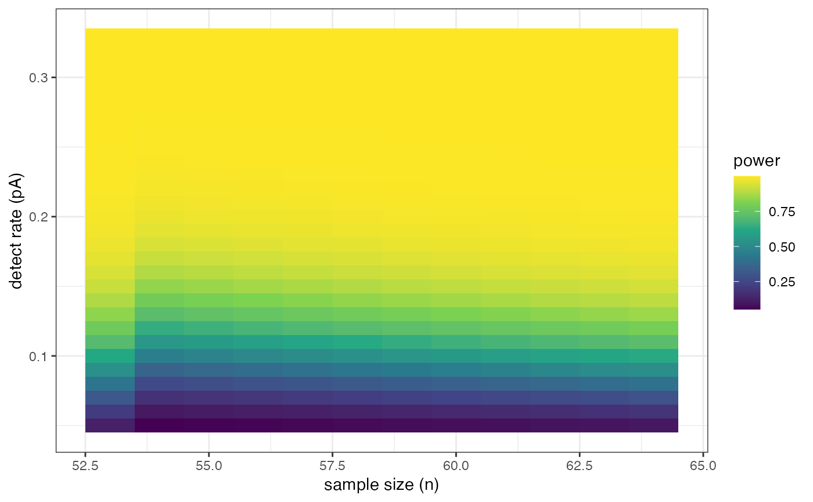

This function calculates a table of sample sizes for with an experiment, given a lineup size, and estimates of the detection rate.
sample_size(n = 53:64, m = 20, pA = seq(1/20, 1/3, 0.01), conf = 0.95)range of sample sizes to check, default is 53:64
linup size, default 20
range of estimated detection rates to consider, default is seq(1/20, 1/3, 0.01)
confidence level to use to simulate from binomial
pow <- sample_size()
pow
#> # A tibble: 348 × 4
#> n k pA prob
#> <int> <dbl> <dbl> <dbl>
#> 1 53 5 0.05 0.125
#> 2 54 6 0.05 0.0520
#> 3 55 6 0.05 0.0560
#> 4 56 6 0.05 0.0602
#> 5 57 6 0.05 0.0646
#> 6 58 6 0.05 0.0691
#> 7 59 6 0.05 0.0738
#> 8 60 6 0.05 0.0787
#> 9 61 6 0.05 0.0838
#> 10 62 6 0.05 0.0891
#> # ℹ 338 more rows
library(ggplot2)
library(viridis)
#> Loading required package: viridisLite
ggplot(pow, aes(x=n, y=pA, fill=prob, group=pA)) +
geom_tile() +
scale_fill_viridis_c("power") +
ylab("detect rate (pA)") + xlab("sample size (n)") +
theme_bw()
